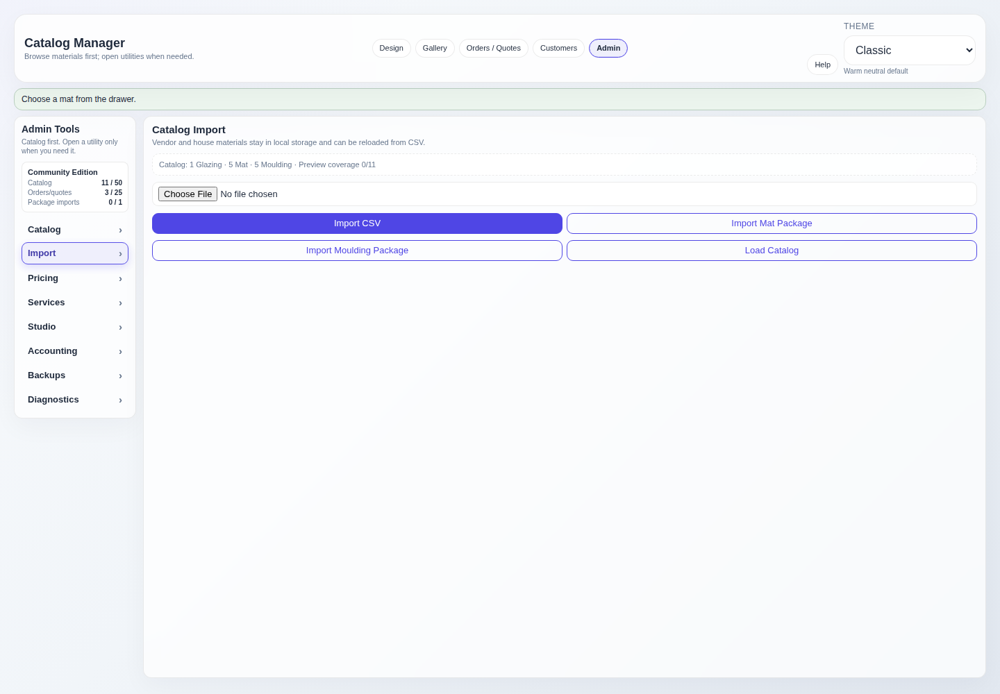
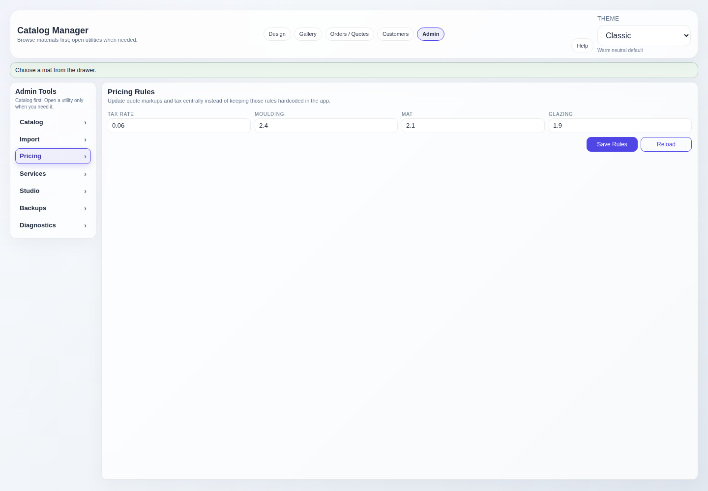

Maintain the workstation
Admin & Pricing
Admin owns catalog imports, manual material corrections, pricing rules, service prices, and local backups. Changes here affect future quote calculations.
Edition limits
The edition status panel in the Admin rail shows current usage against the active local limits.
- Community Edition: 50 active catalog items, 25 saved quotes/orders, and 1 successful local catalog package import.
- Workstation Edition: the catalog, saved quote/order, and package-import counters are unlimited.
Set FRAMERSHAVEN_EDITION=workstation before starting the app to run in Workstation mode.
Community limits prevent new records at the boundary. Existing catalog items, orders, previews, and exports remain available.
Materials and services stay separate
Catalog materials
Moulding, mat, and glazing are catalog-backed items with SKU, cost, vendor, dimensions, preview image, and source metadata.
Shop services
Backing, mounting, frame mounting, printing, various, assembly, royalties, and custom rows are admin-priced service options.
The app rejects service-like catalog categories so material browsing and shop labor pricing cannot silently mix together.
Import vendor catalogs
- Prepare the source files. Put operator-supplied CSV and preview ZIP files in the local
catalog_imports/folder. - Choose the matching import. Use Import Mat Package or Import Moulding Package. A general CSV import is also available for the supported columns.
- Review the result. The import reports inserted, updated, skipped, duplicate, and preview counts.
- Spot-check the catalog. Search a few known SKUs and confirm names, costs, dimensions, and previews.
Local package imports upsert existing rows by SKU and category. Valid existing items are updated instead of duplicated; invalid rows are skipped.

Pricing and manual corrections
- Pricing Rules controls the saved tax rate and material markups used by quote calculation.
- Manual Pricing controls service cost, markup, pricing basis, label, and active state.
- Catalog Editor can create a missing material or correct an imported item without rerunning the full import.
- Use the cropped texture uploader to attach a better moulding strip preview to the selected moulding.
- Calculate a fresh quote after changing pricing; an already calculated on-screen quote may need to be recalculated.

Backups and recovery
- Create a backup. Use Create Backup before major imports or workstation changes.
- Download the ZIP. The archive includes the database, uploads, exports, catalog snapshot, and backup metadata.
- Restore only while stopped. Stop the app before replacing
studio.dbor working directories from a backup. - Verify after restore. Restart, check catalog counts, then spot-check recent jobs in Orders / Quotes.
Copy the existing database and working folders somewhere safe first. A restore should be reversible until the replacement is verified.
Accounting export for Workstation (Planned)
If your build includes Workstation accounting export, this area is for generating local CSV files for accounting review. It does not connect to an online accounting service, sync records, or send data outside the workstation. No accounting credentials or API tokens are included.
- Export customer, invoice, and invoice-line CSV files from saved local orders.
- Review the CSV files before importing them into any accounting workflow.
- Keep generated files under the local exports folder and include them in backups if needed.
- Community Edition should explain that accounting CSV export is a planned Workstation feature when the control is unavailable.
The export is intended to help an operator review totals and line details. It does not prove that an accounting system accepted the records.